الهيرو الأصلي · العربية · 390
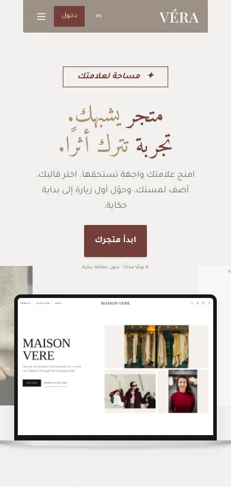
الأصول والتركيب محفوظان؛ CTA ظاهر على الهاتف.
390 × 844 · platform/hero-ar-390.png
الهيرو الأصلي · الإنجليزية · 1440
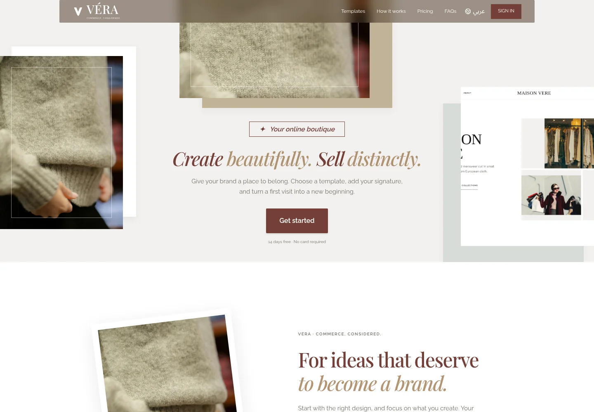
نفس هوية الصفحة وأصولها قبل تطوير الأقسام اللاحقة.
1440 × 1000 · platform/hero-en-1440.png
اللاندنج الكاملة · العربية · 1440
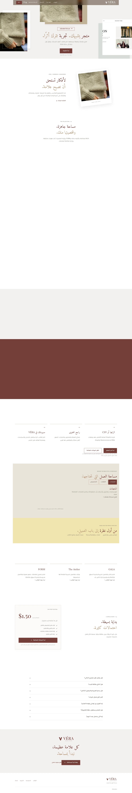
رحلتا الإنشاء والنقل، حدود واضحة، معاينات موسومة وأسئلة متطابقة مع
وظائف النسخة.
1440 × 8601 · platform/landing-ar-1440.png
اللاندنج · الإنجليزية · 390

المقاسات وCTAs واللغة والنصوص فُحصت دون overflow.
390 × 10860 · platform/landing-en-390.png
متاجري · العربية · 390
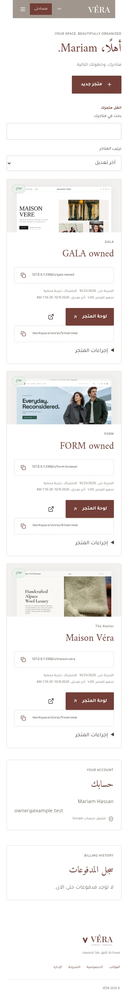
بطاقات الهوية، readiness وآخر تعديل، روابط الإدارة والزيارة والبحث.
390 × 3026 · ecosystem/stores-ar-390.png
اختيار القالب · العربية · 390
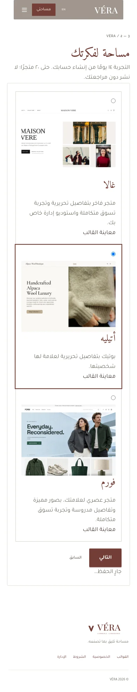
اختيارات registry حقيقية بعد خطوة حفظ المسودة؛ لا كلمة مرور ثانية.
390 × 1960 · ecosystem/onboarding-ar-390.png
اختيار القالب · الإنجليزية · 390
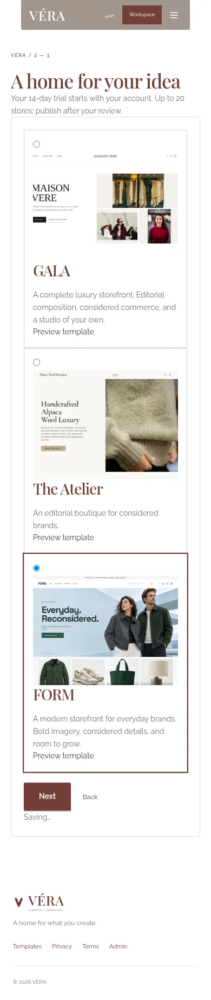
تظل نية القالب محفوظة عند الاستكمال.
390 × 1842 · ecosystem/onboarding-en-390.png
قائمة المنتجات · العربية · 390
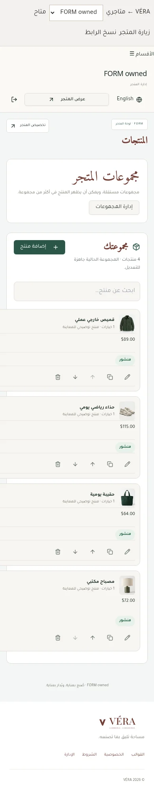
صفوف مختصرة بصور وحالة وسعر ومخزون وإجراءات.
390 × 2004 · ecosystem/product-list-ar-390.png
محرر المنتج · العربية · 390
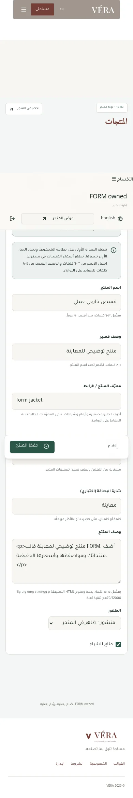
المحرر يظهر وحده، أقسام واضحة وحفظ ظاهر؛ الإغلاق متاح من كل قسم.
390 × 2325 · ecosystem/product-editor-ar-390.png
محرر المنتج · الإنجليزية · 390
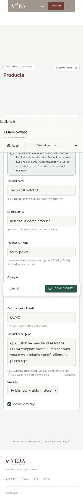
حفظ واستكمال URL عميق بعد إعادة تحميل الصفحة.
390 × 2330 · ecosystem/product-editor-en-390.png
مراجعة CSV · العربية · 390
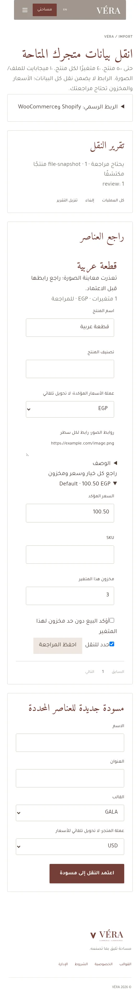
تم تصحيح سعر ومخزون ناقصين وحفظ المراجعة واستكمال التقرير. ظهور خطأ
معاينة صورة يعكس عدم الوصول إلى مصدرها، ولا يُخفى.
390 × 2785 · ecosystem/import-review-ar-390.png
مالك المنصة · العربية · 390
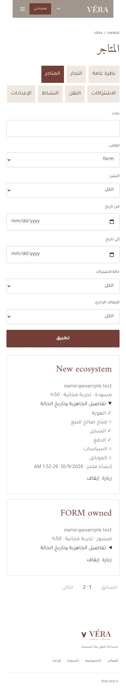
فلاتر مستقلة، جاهزية مفصلة وتاريخ حالة؛ الوصول مخول للمالك فقط.
390 × 2141 · ecosystem/owner-stores-ar-390.png
GALA Studio · العربية · 390
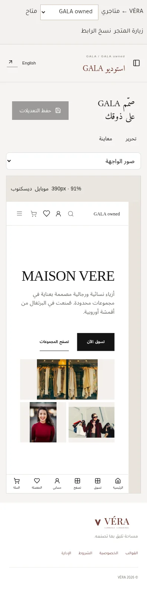
وضع المعاينة، canvas 390 scaled وواجهة عربية؛ لا صفحة إعدادات ممتدة
فوق المعاينة.
390 × 1558 · ecosystem/gala-design-ar-390.png
GALA Studio · الإنجليزية · 1440

المحرر والمعاينة في مساحة واحدة بهوية الاستوديو.
1440 × 1554 · ecosystem/gala-design-en-1440.png
GALA · معاينة تعديلات غير محفوظة
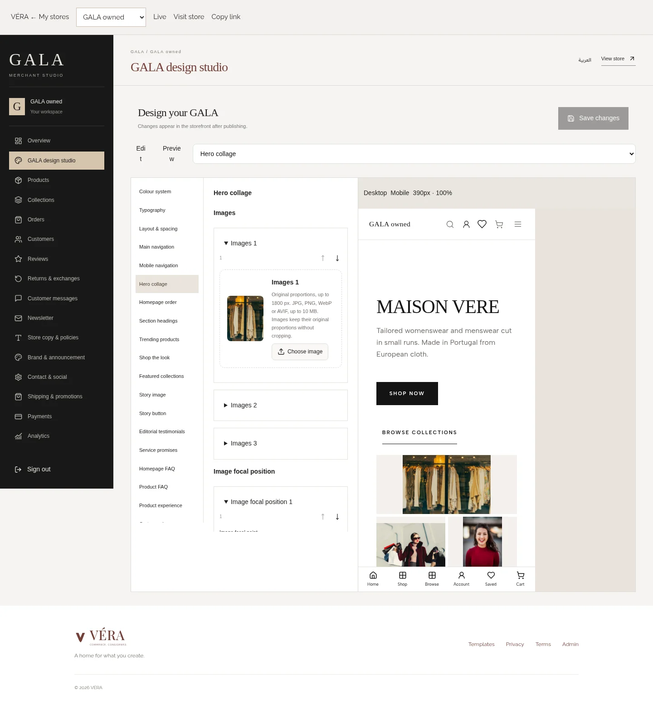
اختبار API وpostMessage يثبت عرض التعديل مع بقاء الإعدادات المحفوظة
كما كانت.
1440 × 1554 · ecosystem/gala-unsaved-preview.png
FORM · العربية · 360
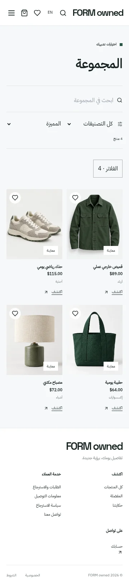
إصلاح overflow الهيدر؛ كتالوج وخيارات وسعر من API.
360 × 1627 · ecosystem/form-browser-ar-360.png
FORM · الإنجليزية · 1440
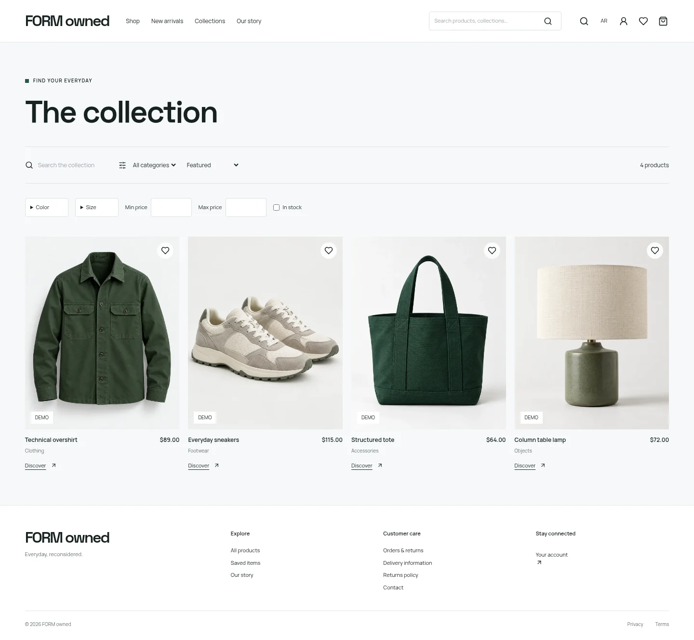
شبكة عملية حديثة وصور القالب؛ الهوية مستقلة عن أتيليه.
1440 × 1328 · ecosystem/form-browser-en-1440.png
أتيليه · العربية · 390
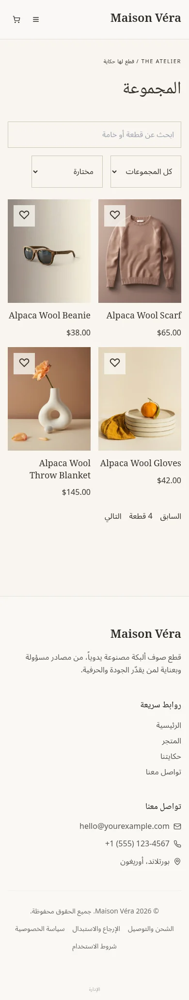
كتالوج بوتيك فعلي ومفضلة؛ الأصول الأربع الأصلية محفوظة.
390 × 2057 · ecosystem/maison-vera-ar-390.png
أتيليه · الإنجليزية · 1440
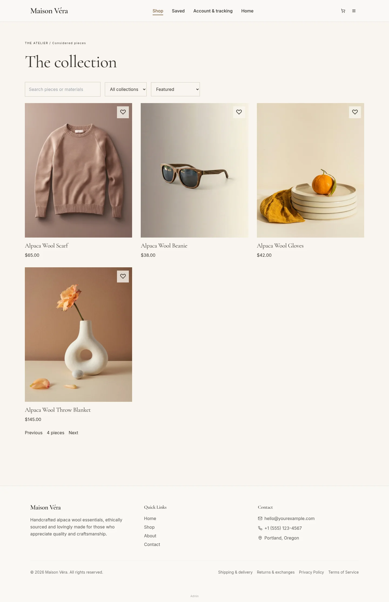
هوية حرفية دافئة وبيانات كتالوج حقيقية داخل نطاق المتجر.
1440 × 2225 · ecosystem/maison-vera-en-1440.png
FORM · تأكيد شراء كضيف
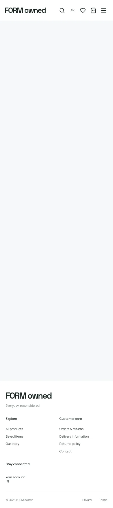
طلب COD حقيقي في قاعدة fixture مؤقتة، مع receipt وتتبّع؛ لا عملية دفع
حي.
390 × 1746 · ecosystem/form-guest-order-390.png
أتيليه · تأكيد شراء كضيف
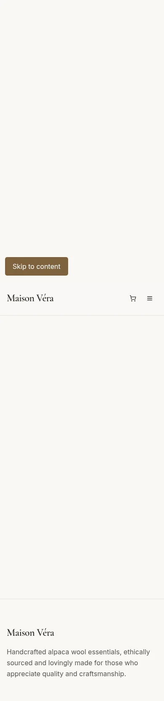
المفضلة والمنتج والسلة والطلب تعمل كرحلة متصلة.
390 × 1666 · ecosystem/atelier-guest-order-390.png